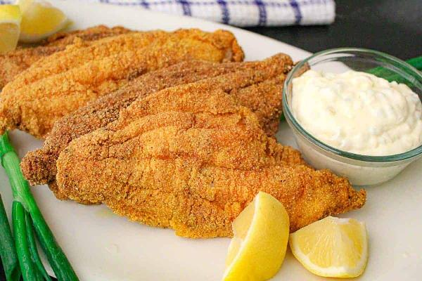

Back to Homepage
Southern Fried Catfish

Description
Southern Fried Catfish is easy to make and this restaurant-quality recipe won’t disappoint! You’ll love this 3-step, 7-ingredient recipe and it’s ready in less than 20-minutes! The crispy fish coating contains no egg or flour so if you’re on a gluten-free diet, this fish is for you!
Ingredients
- 4 fillets catfish
- 1½ cups oil vegetable, canola or peanut oil
- 2 cups cornmeal yellow
- 1 cup buttermilk
- 1 tablespoon cayenne pepper
- 1 teaspoon salt
- 1 teaspoon black pepper
Instructions
- Pat fillets with paper towel
- Place fish in a large baking dish or plastic storage bag, pour in buttermilk; coat well; allow to sit for 10-minutes in refrigerator
- In a large bowl, add cornmeal, salt, pepper and cayenne; stir with fork till blended
- Using a cast-iron, or heavy bottom skillet, pour oil into skillet and heat to medium
- While oil is heating, take a fillet directly from the buttermilk and place it in the cornmeal; pat the cornmeal on the fillet; coat it all over, twice; repeat with remaining fillets
- Cooking in batches of two fillets, place them in the hot oil; DO NOT MOVE THE FILLETS until they've cooked for 2 1/2 - 3 minutes on one side
- After 2 1/2 -3 minutes, use tongs and flip the fish over and cook for an additional 3 minutes
- Remove fillets from oil and place on a paper towel
- Repeat until all fillets are cooked and drained
- Repeat until all fillets are cooked and drained
Back to Homepage